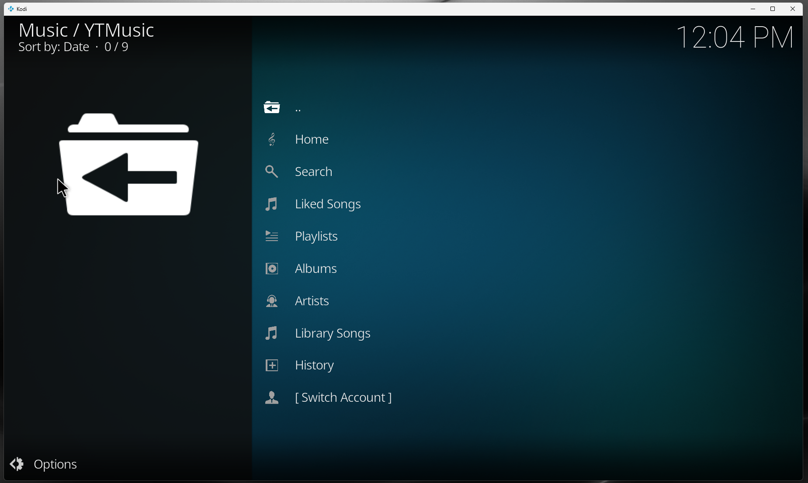
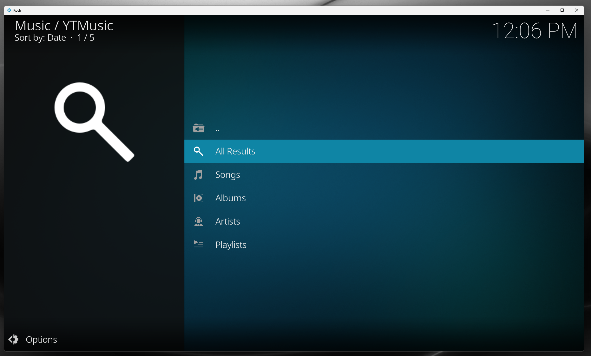
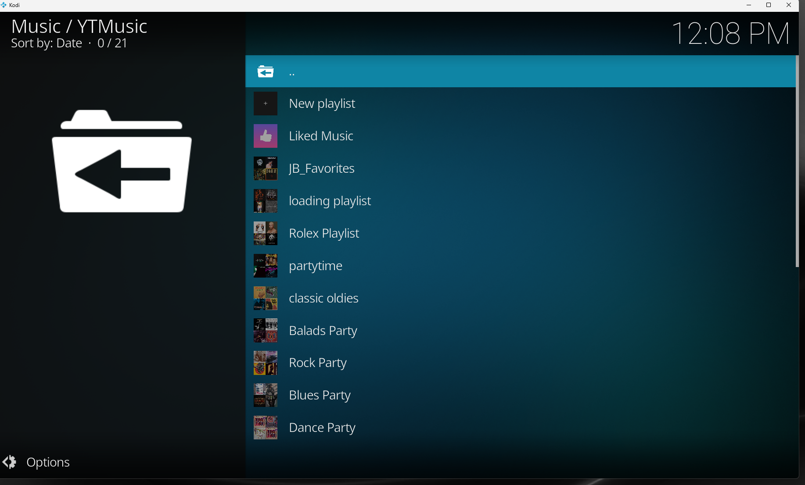
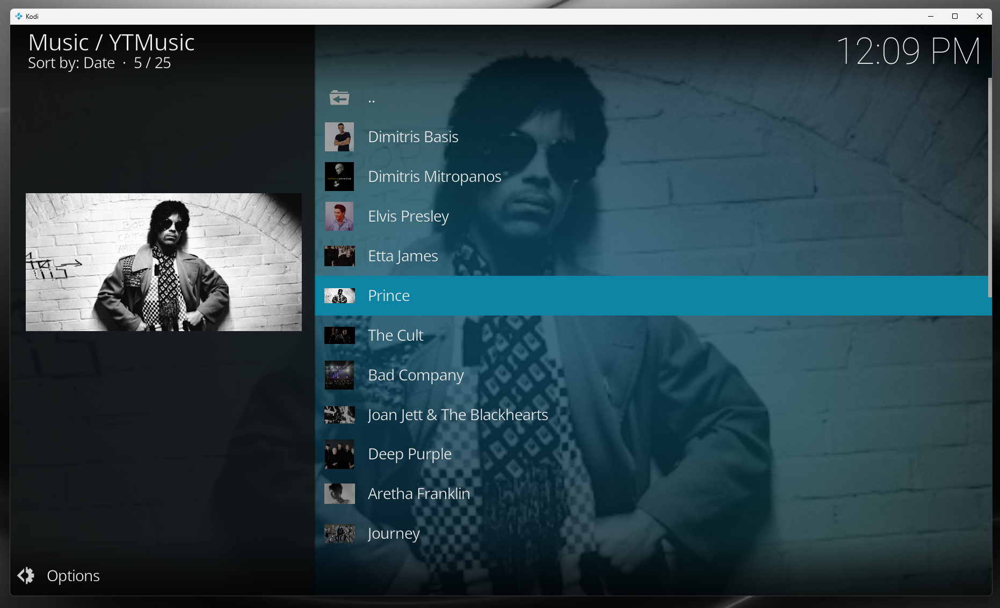
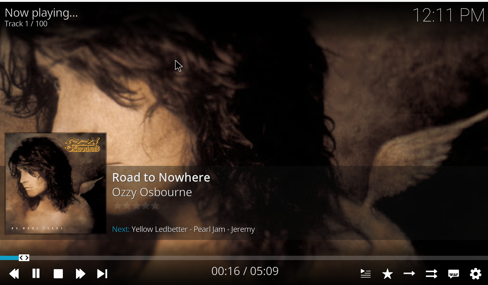
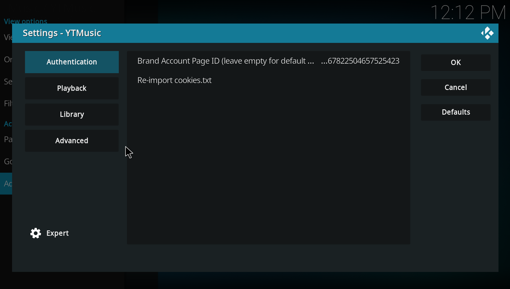

Browse and play your YouTube Music Premium library directly inside Kodi. Songs, playlists, albums, artists, lyrics, brand accounts — all on your TV.
⬇ Download latest release View on GitHub





No — this is an unofficial Kodi add-on. It is not affiliated with Google, YouTube or YouTube Music.
Yes. Premium quality (256 kbps) and ad-free playback require an active YouTube Music Premium subscription.
Yes — Kodi 21 Omega is the primary target.
Yes — it is regularly tested on LibreELEC running Kodi 21.
Export your YouTube Music browser cookies into a cookies.txt file and point the add-on at it. See the Authentication section in the README.
YouTube Music does not expose a public auth API for third-party clients. Cookies tied to your account are the only way to verify your subscription and access your library.